1. Willkommen
DuoVox transkribiert Sprache in Echtzeit und übersetzt sie sofort, sodass zwei Menschen ohne gemeinsame Sprache einem lebendigen Gespräch in beide Richtungen an einem einzigen Windows-PC folgen können. Es ist gemacht für Dolmetscher, Praxen, Klassenzimmer, Support-Teams, Unternehmen und Familien.
Während die Personen sprechen, zeigt DuoVox ein Live-Transkript des Gesagten und daneben eine laufende Übersetzung. Es kann einen Anruf oder ein Video untertiteln, das auf Ihrem Computer läuft, oder Ihr eigenes Mikrofon. Außerdem kann es eine Mediendatei im Nachhinein untertiteln und ganze Dokumente übersetzen.
Dieses Handbuch behandelt alles von Ihrer ersten Sitzung bis zu den integrierten Werkzeugen, mit Screenshots aus der echten App neben dem Text. Über die anklickbare Inhaltsseite (oder das Lesezeichen-Panel Ihres PDF-Programms) springen Sie zu jedem Abschnitt.
2. Installation & erster Start
- Microsoft Store: Installation mit einem Klick, automatische Updates, von Microsoft signiert. Sie finden ihn über duovox.net.
Beim ersten Start zeigt DuoVox die Nutzungsbedingungen und bittet Sie, diese zu akzeptieren, bevor das Hauptfenster erscheint; das geschieht einmalig und erneut nur, wenn sich die Bedingungen ändern. Danach startet die Oberfläche auf Englisch; über das Globus-Symbol in der Symbolleiste können Sie sie jederzeit auf jede der unterstützten Sprachen umstellen.
3. Ein Live-Gespräch
Stellen Sie Ihre Audioquelle ein und drücken Sie dann Starten (oder Ctrl+Alt+S). DuoVox beginnt zuzuhören und füllt die Untertitelfelder mit dem Transkript und daneben der Übersetzung. Drücken Sie Stoppen, um die Sitzung zu beenden.
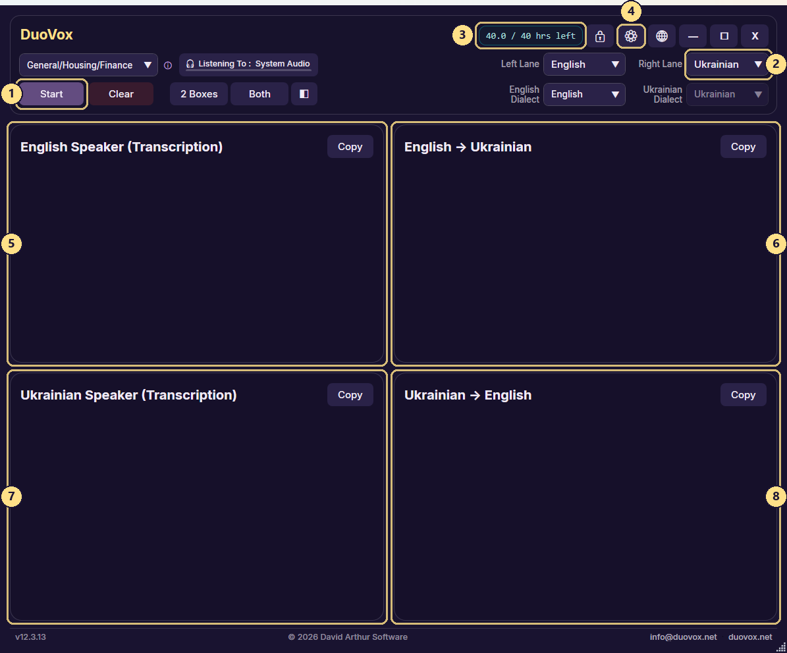
- 1Starten / Stoppen
- 2Auswahlfeld für die Zielsprache
- 3Verbleibende Stunden
- 4Menü
- 5Transkript des Primärsprechers
- 6Übersetzung des Primärsprechers
- 7Transkript des anderen Sprechers
- 8Übersetzung des anderen Sprechers
Die Audioquelle wählen
Die Symbolleiste zeigt, worauf DuoVox gerade hört (zum Beispiel “Quelle: Systemton”); der dünne grüne Balken darunter bewegt sich, solange Ton ankommt. Klicken Sie auf diese Schaltfläche, um durch die drei Quellen zu wechseln:
- Systemton: untertitelt einen Anruf, eine Besprechung oder ein Video auf Ihrem PC (Teams, Zoom, YouTube usw.).
- PC/Mikrofon: untertitelt Personen, die im Raum sprechen, über das im Laptop eingebaute Mikrofon oder ein Mikrofon auf dem Schreibtisch.
- Headset: untertitelt Ihre eigene Stimme über ein dicht am Mund getragenes Headset-Mikrofon.
- Wenn eine "kein Audio"-Meldung erscheint, wechseln Sie die Quelle, damit sie dazu passt, woher der Ton tatsächlich kommt.
Welches Gerät DuoVox tatsächlich aufnimmt, ist eine eigene Einstellung, die Sie im Menü unter Audio → Audioeingabegerät treffen. Die Liste richtet sich nach der gewählten Quelle: Bei PC/Mikrofon oder Headset werden Ihre Mikrofone aufgeführt, angeführt von (Standardmikrofon); bei Systemton werden Wiedergabegeräte aufgeführt, angeführt von (Standard – Systemaudio). Lassen Sie den Standardeintrag stehen, um dem Aufnahmegerät zu folgen, das in Windows eingestellt ist, oder wählen Sie ein bestimmtes Mikrofon aus der Liste, wenn mehrere angeschlossen sind.
Primär- & Zielsprache
Ein Gespräch hat zwei Seiten, die Sie in den beiden Sprachauswahlen rechts in der Symbolleiste auswählen. Jede ist mit dem Untertitelfenster überschrieben, das sie füllt. Beide Seiten können jede unterstützte Sprache sein, in beide Richtungen – DuoVox behandelt keine Sprache als die “Haupt”sprache. Das Globussymbol ist davon getrennt: Es ändert die Sprache der eigenen Menüs und Schaltflächen von DuoVox, nicht die Sprache des Gesprächs.
- 2-Felder-Modus: zeigt einen Sprecher und die Übersetzung; die Richtung wechseln Sie mit einer Schaltfläche.
- 4-Felder-Modus: zeigt beide Sprecher gleichzeitig transkribiert und übersetzt, ideal für ein echtes Gespräch in beide Richtungen (wie im Screenshot oben).
Thema & Dialekt (ab Standard)
In den kostenpflichtigen Tarifen helfen drei Auswahlfelder DuoVox dabei, die richtigen Wörter für Ihr Gespräch zu erkennen. Thema befindet sich links über der Schaltfläche Starten; die beiden Dialekt-Auswahlfelder befinden sich direkt unter der jeweiligen Sprache, sodass jede Spalte von oben nach unten gelesen wird: die Seite, dann ihre Sprache, dann ihr Dialekt.
- Thema: das Thema des Gesprächs (zum Beispiel Allgemein/Wohnen/Finanzen, Medizin oder Recht). DuoVox bevorzugt das Fachvokabular dieses Bereichs, damit Begriffe genauer transkribiert werden.
- Dialekt – eines für jede Seite des Gesprächs, direkt unter der Sprache dieser Seite und mit ihr beschriftet, sodass Sie unter der linken Sprache zum Beispiel Dialekt (Englisch) und unter der rechten Sprache Dialekt (Arabisch) sehen können. Genau darum geht es, sie unabhängig voneinander festzulegen: Eine Londoner Klinik kann in derselben Sitzung britisches Englisch mit tunesischem Arabisch kombinieren, was mit einer einzigen gemeinsamen Einstellung nie möglich wäre.
Ein Dialekt passt Schreibweise und Wortwahl an den örtlichen Gebrauch an – zum Beispiel britisches oder amerikanisches Englisch. Nicht jede Sprache hat regionale Varianten; wenn die von Ihnen gewählte Sprache keine hat, ist die Auswahl ausgegraut und eine Kurzinfo erklärt warum.
4. Layout & Darstellung
Der Untertitelbereich von DuoVox lässt sich vollständig anpassen: Wählen Sie, wie viele Felder sichtbar sind und ob Sie Transkripte, Übersetzungen oder beides sehen, ordnen Sie an, welches Feld wo sitzt, und ändern Sie das Aussehen des Fensters selbst.
Felderanzahl und Anzeigemodus
Zwei unabhängige Schaltflächen in der Symbolleiste steuern, was der Untertitelbereich zeigt. Die Schaltfläche 4 Felder / 2 Felder (1, Ctrl+Alt+R) legt fest, wie viele Felder sichtbar sind, und ihre Beschriftung zeigt immer die Anzahl, zu der Sie wechseln würden – sie lautet also “2 Felder”, während Sie sich in der 4-Felder-Ansicht befinden, und “4 Felder”, während Sie in der 2-Felder-Ansicht sind. Die Schaltfläche daneben schaltet den Anzeigemodus durch Beides → Transkribieren → Übersetzen (2), und ihre Beschriftung zeigt den Modus, der gerade aktiv ist.
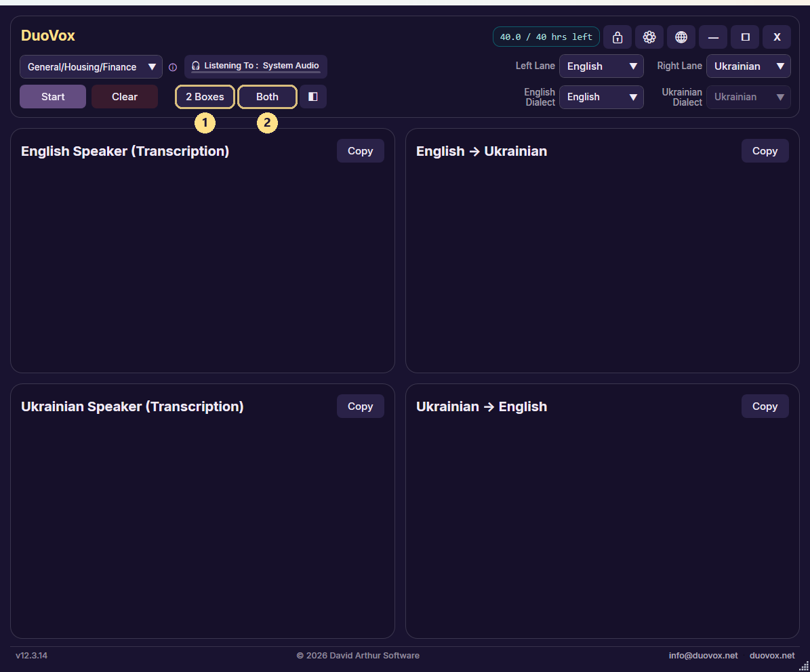
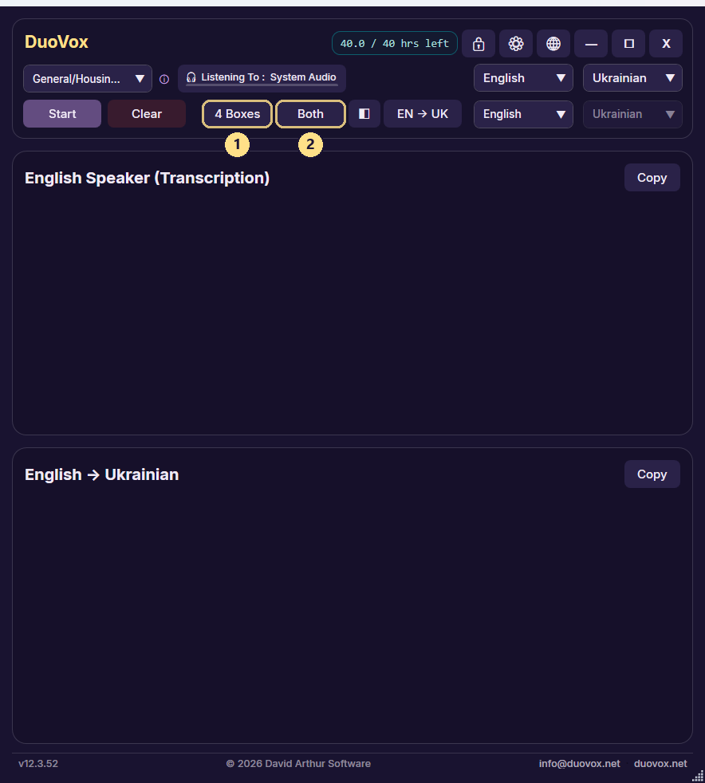
Der Wechsel zu 2 Felder macht auch das Fenster selbst schmaler und verkürzt die Anzeige des Sprachpaars auf eine kompakte Form (zum Beispiel “EN → UK”), damit sie weiterhin hineinpasst – praktisch, um DuoVox neben anderer Arbeit geöffnet zu halten, statt es als Fenster in voller Breite zu nutzen.
Die Anzeigemodus-Schaltfläche blendet die Hälfte aus, die Sie nicht brauchen: Transkribieren zeigt nur die Transkript-Felder und blendet jede Übersetzung aus; Übersetzen macht es umgekehrt und zeigt nur die Übersetzungs-Felder.
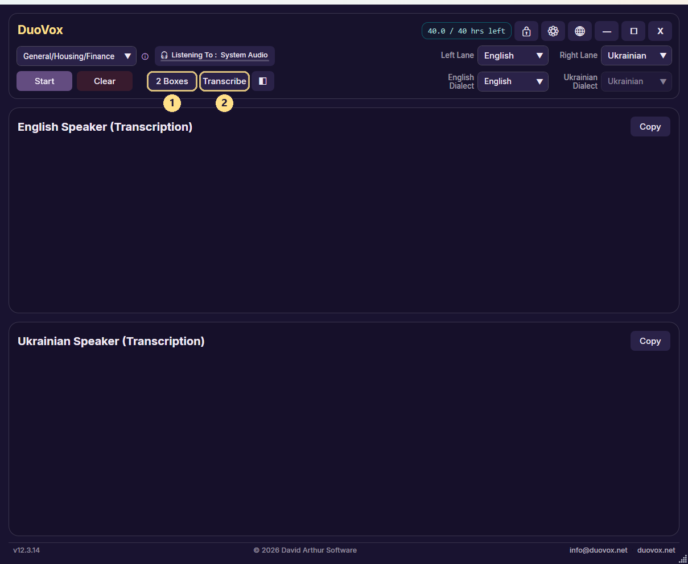
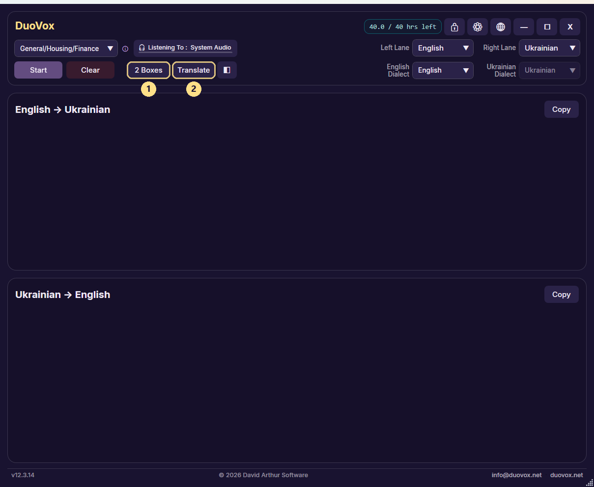
Bereichslayout
Die Felder lassen sich auch neu anordnen, zum Beispiel mit dem Transkript eines Sprechers direkt neben seiner Übersetzung statt darunter.
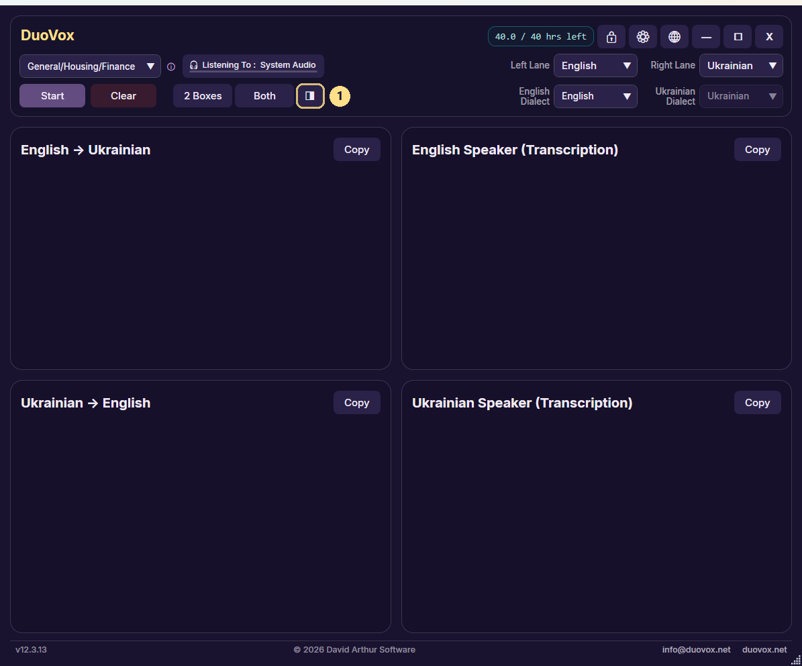
- 1Bereichslayout-Schaltfläche
Darstellung
Öffnen Sie das Menü (Zahnrad-Symbol oben rechts) und dann Anzeige > Darstellung, um das Aussehen von DuoVox zu ändern.
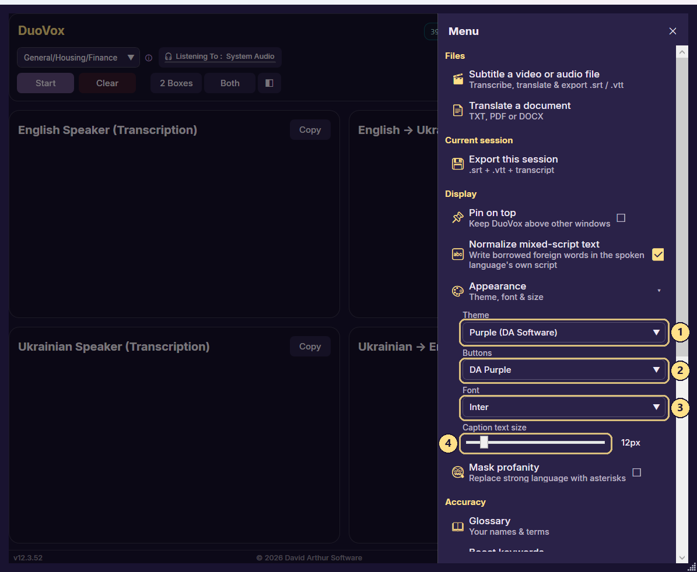
- 1Design
- 2Schaltfl. – der Schaltflächen-Stil
- 3Schrift – die Schrift der Untertitel
- 4Textgröße der Untertitel
- Im Vordergrund halten hält das DuoVox-Fenster immer über anderen Apps (Ctrl+Alt+T).
- Löschen setzt die Untertitel und die Untertiteluhr zurück (Ctrl+Alt+C).
Gemischte Schriften normalisieren
Oft streuen Menschen ein englisches Wort in einen Satz in ihrer eigenen Sprache ein – und dann erscheint es meist in englischen Buchstaben, mitten in einem Satz, der sonst in seinem eigenen Alphabet steht. Die Zeile bleibt korrekt lesbar, wirkt aber unordentlich:
- Gehört als: “У мене appointment о третій”
- Bereinigt zu: “У мене епойнтмент о третій”
Das Wort wird nicht übersetzt oder verändert – es wird lediglich im Alphabet der gesprochenen Sprache geschrieben, sodass die ganze Zeile in einer Schrift lesbar ist. Namen und Marken (Microsoft, iPhone, NASA) bleiben bewusst so, wie sie sind, weil man sie genau so erwartet.
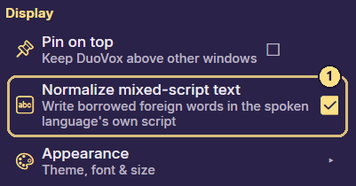
- 1Gemischte Schriften normalisieren – ein Häkchen im Kästchen bedeutet, dass die Funktion eingeschaltet ist
- Sie finden die Funktion im Standard- oder Professional-Tarif unter Anzeige > Gemischte Schriften normalisieren, wo sie bereits eingeschaltet ist. Anders als bei Thema und Dialekt wird die Zeile im Kostenlos-Tarif überhaupt nicht angezeigt.
- Das Kästchen rechts in der Menüzeile ist angehakt, wenn die Funktion eingeschaltet ist, und leer, wenn sie ausgeschaltet ist. Wählen Sie die Zeile, um dies zu ändern.
- Sie benötigt eine Internetverbindung und einen Standard- oder Professional-Tarif; im Kostenlos-Tarif oder während DuoVox offline arbeitet, läuft sie daher nicht.
- Sie wirkt nur auf Zeilen, in denen tatsächlich zwei Alphabete gemischt sind; in den meisten Gesprächen kommt sie daher nie zum Einsatz. Die Zeile erscheint zunächst so, wie sie gehört wurde, und bereinigt sich einen Moment später von selbst.
Schimpfwörter maskieren
Untertitel sind oft für mehr als nur die lesende Person sichtbar – in einem Wartezimmer, in einem Klassenzimmer oder auf einem geteilten Bildschirm in einer Besprechung. Schimpfwörter maskieren ersetzt starke Ausdrücke durch Sternchen, sodass die Zeile natürlich lesbar bleibt, ohne die Wörter selbst auf dem Bildschirm anzuzeigen.
- Sie finden dies unter Anzeige > Schimpfwörter maskieren; es ist anfangs deaktiviert.
- Es funktioniert in jedem Tarif, einschließlich Free und auch dann, wenn DuoVox offline läuft – anders als „Gemischte Schriften normalisieren“ oben, das eine Verbindung und einen kostenpflichtigen Tarif benötigt.
- Die Maskierung wird angewendet, während jede Zeile erzeugt wird, sodass sie überall übernommen wird, wo die Wörter sonst erscheinen würden: in den Untertiteln auf dem Bildschirm, in der Übersetzung daneben und in jeder Datei, die Sie exportieren.
- Es werden nur ganze Wörter maskiert, sodass gewöhnliche Ortsnamen, Nachnamen und medizinische Begriffe nicht versehentlich mit Sternchen versehen werden. Chinesisch und Japanisch werden anders abgeglichen, weil sie ohne Leerzeichen zwischen Wörtern geschrieben werden.
- Die Wortlisten sind bewusst zurückhaltend und decken die stärksten Ausdrücke in jeder Sprache ab. Ein Wort, das durchrutscht, ist leichter hinzunehmen als ein gewöhnliches Wort, das fälschlich verborgen wird.
5. Genauigkeits-Werkzeuge (Professional)
Öffnen Sie im Menü die Gruppe Genauigkeit, um DuoVox das Fachvokabular Ihres Gesprächs beizubringen (Namen, medizinische oder juristische Begriffe, Abkürzungen und Fachjargon), damit diese Begriffe korrekt ankommen, statt falsch verstanden zu werden.
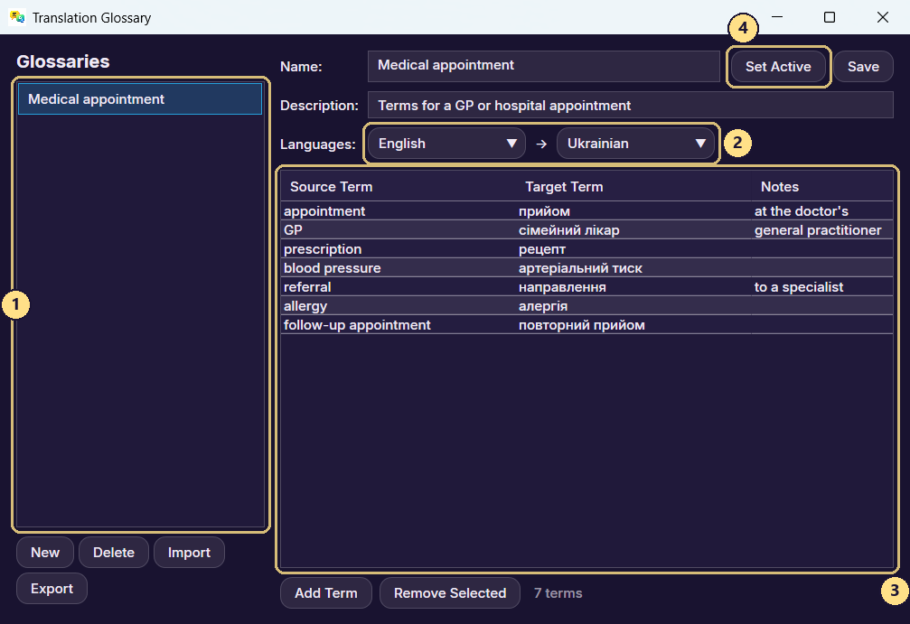
- 1Glossarliste (gespeicherte Profile)
- 2Sprachpaar für dieses Glossar
- 3Begriffstabelle (Ausgangsbegriff, Übersetzung, Notizen)
- 4Aktiv setzen (in Ihrer Sitzung verwenden)
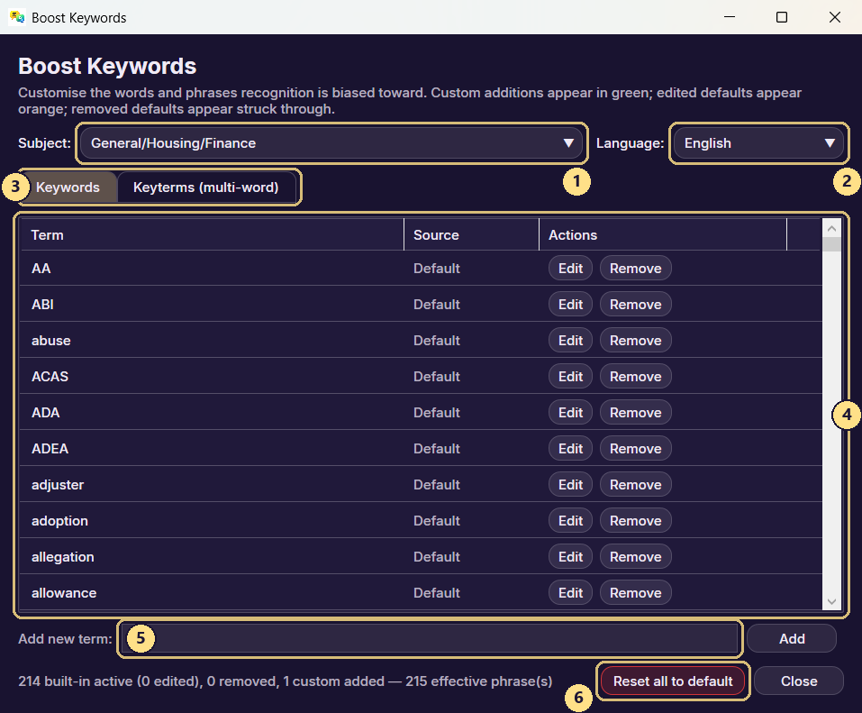
- 1Thema
- 2Sprache
- 3Registerkarten Schlüsselwörter / Phrasen (mehrere Wörter)
- 4Begriffsliste
- 5Neuen Begriff hinzufügen
- 6Alles zurücksetzen
6. Arbeiten mit Dateien
Video oder Audio untertiteln (Professional)
Öffnen Sie im Menü die Gruppe Dateien und wählen Sie Video oder Audio untertiteln (das Filmklappen-Symbol), um eine vorhandene Aufnahme statt einer Live-Quelle zu transkribieren und optional zu übersetzen. Ein normaler Windows-Dateidialog öffnet sich. Wählen Sie die Aufnahme aus, und DuoVox zeigt zunächst an, wie lang sie ist und wie viel von Ihrem monatlichen Kontingent noch übrig ist – das Untertiteln einer Datei verbraucht Ihre enthaltenen Stunden, genau wie eine Live-Sitzung. Bestätigen Sie, und das unten gezeigte Untertitelfenster öffnet sich.
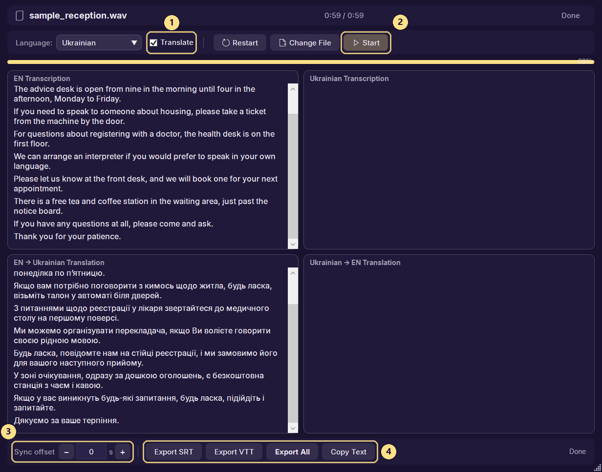
- 1Übersetzen ein / aus
- 2Starten
- 3Zeitversatz
- 4Export- und Kopier-Schaltflächen
Dokument übersetzen (ab Standard)
Wählen Sie in derselben Gruppe Dateien den Eintrag Dokument übersetzen, um eine ganze TXT-, PDF- oder DOCX-Datei statt eines gesprochenen Gesprächs zu übersetzen. Ein Dateidialog öffnet sich, in dem Sie das Dokument auswählen. Das Dokumentfenster öffnet sich mit dem geladenen Text; wählen Sie Ihre Zielsprache und drücken Sie Übersetzung starten. Sobald der Vorgang abgeschlossen ist, erscheinen Original und übersetzter Text nebeneinander, wie unten gezeigt.
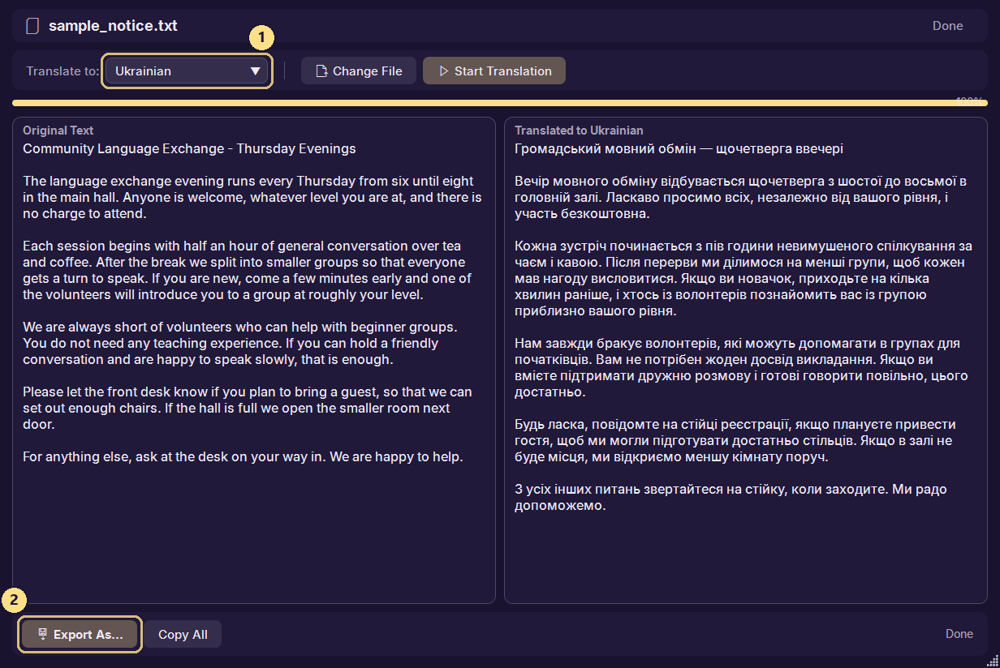
- 1Zielsprache
- 2Exportieren als
7. Ihre Sitzung exportieren
Die Menügruppe Aktuelle Sitzung enthält Diese Sitzung exportieren (Ctrl+Alt+E): Damit speichern Sie das gerade geführte Live-Gespräch als Untertitel (.srt, dazu .vtt für Browser und Streaming-Programme) und als Transkriptprotokoll in reinem Text (.txt). Das Exportieren ist eine Professional-Funktion.
Exporte werden unter Documents\CaptionOverlay\Exports gespeichert. Verschieben Sie alles, was Sie langfristig behalten möchten: DuoVox räumt diesen Ordner für Sie auf und löscht Exporte, die älter als 90 Tage sind.
Das ist etwas anderes als das oben beschriebene Untertiteln einer Datei: Diese Sitzung exportieren speichert das Gespräch, das Sie gerade live in DuoVox geführt haben, während Video oder Audio untertiteln eine separate Aufnahme verarbeitet, die bereits auf Ihrer Festplatte liegt.
Jedes Untertitelfeld hat in seiner Kopfzeile eine eigene Schaltfläche Kopieren, und das in jedem Tarif. Sie kopiert den Text dieses Feldes in die Zwischenablage, ohne eine Datei zu speichern, zum direkten Einfügen in eine andere App – kopieren Sie die gewünschten Felder einzeln, oder speichern Sie mit Diese Sitzung exportieren alle auf einmal.
8. Sprachen & Sprachpakete
DuoVox bietet 49 Sprachen: 43 werden mit Professional untertitelt, 33 mit Standard und 30 funktionieren offline im Free-Tarif. Jede Seite eines Gesprächs kann jede Sprache verwenden, die Ihr Tarif unterstützt.
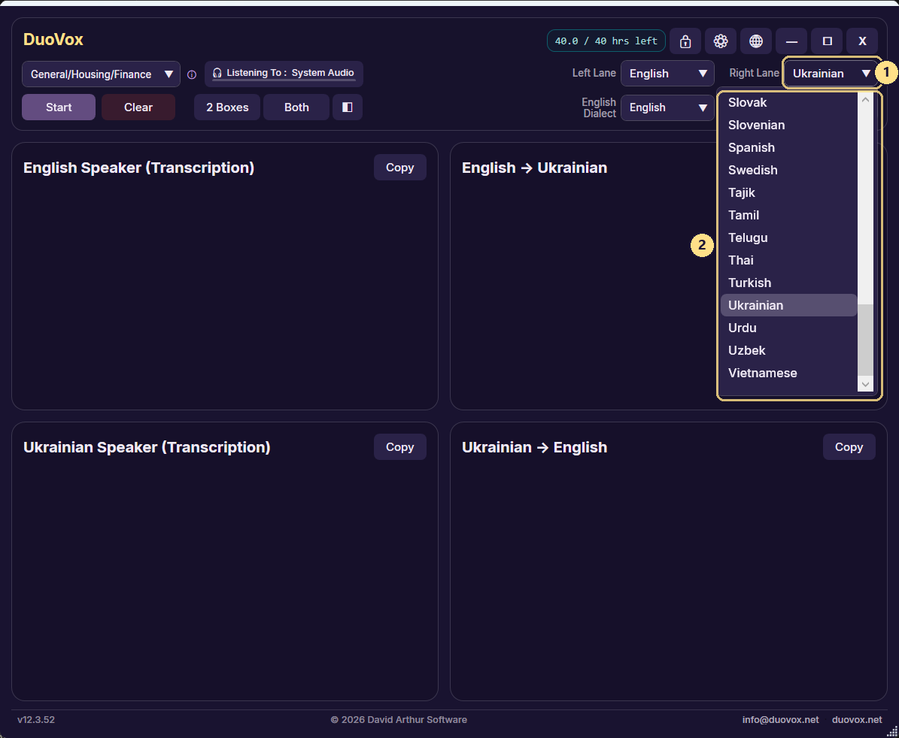
- 1Auswahlfeld für die Zielsprache
- 2Die vollständige Sprachliste
Nicht jede Sprache funktioniert in jedem Tarif gleich, deshalb informiert DuoVox Sie vor einer Sitzung statt erst danach. Wenn Sie eine Sprache auswählen, für die Ihr Tarif keine Untertitel erstellen kann, erscheint ein kurzer Hinweis mit dem Namen der Sprache und dem, was dafür nötig wäre – zum Beispiel, dass sie offline nicht untertitelt werden kann und Standard oder Professional benötigt, oder dass eine Sprache nur in Professional verfügbar ist. In manche Sprachen kann hinein übersetzt werden, auch wenn gesprochene Sprache in dieser Sprache nicht untertitelt werden kann, und der Hinweis sagt das ausdrücklich, statt Sie raten zu lassen.
Derselbe Hinweis erscheint auch, wenn Sie eine Sitzung mit einem Sprachpaar starten, das Sie früher gespeichert haben. So kann ein Paar, das nicht mehr zu Ihrem Tarif passt, nicht stillschweigend dort stehen und nichts ausgeben. Eine vollständige Liste aller Sprachen pro Tarif finden Sie unter duovox.net/languages.
Öffnen Sie im Menü die Gruppe Einstellungen & Erweitert und wählen Sie Sprachen herunterladen, um die Sprachmodelle auf dem Gerät zu verwalten, die DuoVox für den vollständig offline arbeitenden Kostenlos-Tarif nutzt, und als automatische Rückfallebene, falls Ihre Internetverbindung während einer bezahlten Sitzung abbricht.
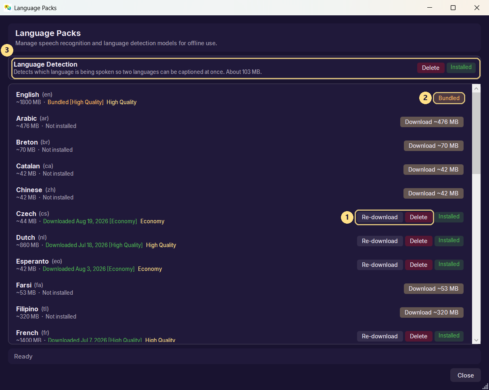
- 1Ein Paket erneut herunterladen oder löschen
- 2Installationsstatus
- 3Spracherkennungs-Modell
9. Tarife & was jeder freischaltet
DuoVox bietet einen Kostenlos-Tarif und Bezahltarife und ist so gestaltet, dass Sie nie festsitzen:
- Kostenlos: Transkription und Übersetzung, vollständig auf Ihrem eigenen PC. Keine Internetverbindung und kein Konto nötig, unbegrenzte Nutzung, aber geringere Genauigkeit als in den Bezahltarifen und keine der unten aufgeführten Bezahlfunktionen. Laden Sie zuerst die benötigten Sprachpakete herunter (siehe Abschnitt 8).
- Standard: Online-KI-Spracherkennung und -Übersetzung, mit einer festgelegten Anzahl von Stunden pro Monat – deutlich genauer als die Offline-Engine.
- Professional: unsere genaueste Spracherkennung und Übersetzung, die größte Sprachabdeckung und jede Funktion in diesem Leitfaden.
Wenn Ihre Internetverbindung ausfällt, arbeitet DuoVox im kostenlosen Offline-Modus auf dem Gerät weiter und kehrt von selbst zur KI Ihres Tarifs zurück, sobald die Verbindung wieder da ist. Erreichen Sie dagegen Ihre monatlichen Stunden, bleibt es für den Rest dieser Sitzung im kostenlosen Offline-Modus; gekaufte Stunden gelten ab der nächsten Sitzung. Es wird niemals etwas gekauft, ohne dass Sie es im Microsoft Store bestätigen. In der Kopfzeile sehen Sie Ihre verbleibenden Stunden in einem kostenpflichtigen Tarif, und wenn Sie eine Obergrenze erreichen, wählen Sie einfach: weitere Stunden kaufen (Pay As You Go), offline fortfahren oder die Sitzung beenden. Wenn Sie Aufladen mit einem Tipp (im Menü unter Einstellungen & Erweitert) einschalten und Ihr eigenes monatliches Limit festlegen, bietet DuoVox den Kauf stattdessen sofort an und hört damit auf, sobald Sie dieses Limit erreichen.
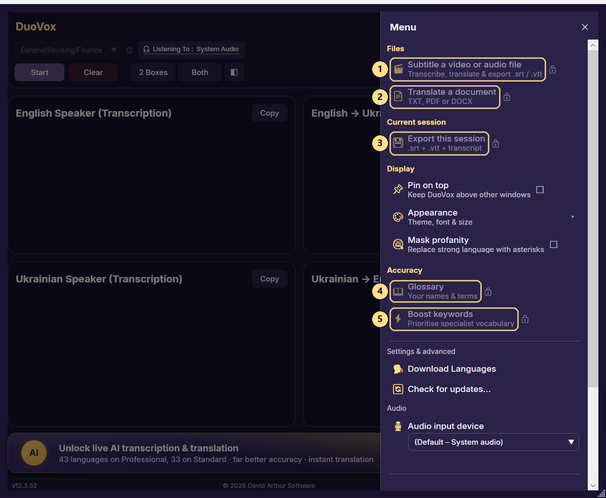
- 1Video oder Audio untertiteln
- 2Dokument übersetzen
- 3Diese Sitzung exportieren
- 4Glossar
- 5Schlüsselwörter hervorheben
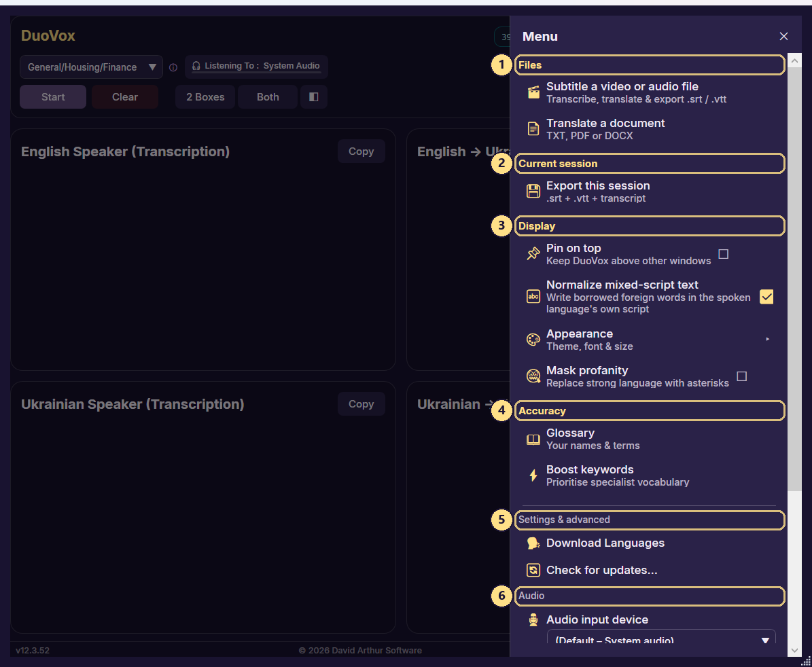
- 1Dateien
- 2Aktuelle Sitzung
- 3Anzeige
- 4Genauigkeit
- 5Einstellungen & Erweitert
- 6Audio
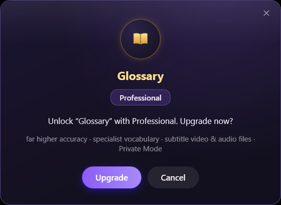
Was jeder Tarif freischaltet
- Jeder Tarif, einschließlich Free: Schimpfwörter maskieren.
- Ab Standard: Dokument übersetzen, Gemischte Schriften normalisieren, die Auswahlfelder Thema und Dialekt sowie die Anzeige der verbleibenden Stunden in der Kopfzeile.
- Professional: Glossar, Schlüsselwörter hervorheben, Video oder Audio untertiteln, Diese Sitzung exportieren und Privatmodus.
Privatmodus (die Schloss-Schaltfläche in der Symbolleiste, Professional) löscht die Untertitel, sobald Sie stoppen, und deaktiviert Kopieren und Export für diese Sitzung.
10. Tastenkürzel
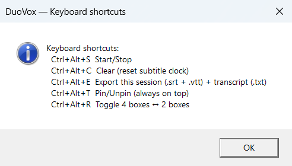
- Ctrl+Alt+S: Starten / Stoppen
- Ctrl+Alt+C: Löschen (Untertiteluhr zurücksetzen)
- Ctrl+Alt+E: Diese Sitzung exportieren (Untertitel als .srt und .vtt sowie ein Transkript als .txt)
- Ctrl+Alt+T: Anheften / Lösen (immer im Vordergrund)
- Ctrl+Alt+R: 4 Felder / 2 Felder umschalten
11. Hilfe & Support
Scrollen Sie im Menü ganz nach unten, unter die Trennlinie. Dort finden Sie alles für den Fall, dass Sie einmal Hilfe brauchen:
- Tastenkürzel: dieselbe Liste wie in Abschnitt 10.
- Benutzerhandbuch: öffnet dieses Handbuch jederzeit erneut.
- Hilfe: kurze Erklärungen zu jedem Teil der App, ohne DuoVox zu verlassen.
- Ein Problem melden: teilt uns mit, dass etwas schiefgelaufen ist – siehe unten.
- Einen Vorschlag senden: eine Idee oder eine Funktion, die Sie sich wünschen. Jeder einzelne wird gelesen.
- Über DuoVox: zeigt Ihre installierte Version und Ihre Geräte-ID – nützliche Angaben, die Sie zur Hand haben sollten, wenn Sie den Support kontaktieren oder uns wegen Ihrer Daten schreiben.
Ein Problem melden und Einen Vorschlag senden finden Sie auch auf der Seite Über DuoVox, unter der Kontaktadresse und Ihrer Geräte-ID.
Ein Problem melden
Beschreiben Sie, was passiert ist, wenn Sie können – Sie können den Bericht aber auch senden, ohne etwas zu schreiben, denn die nützlichen technischen Details werden für Sie gesammelt. Sie können Ihre E-Mail-Adresse angeben, wenn Sie eine Antwort wünschen; lassen Sie das Feld leer, bleibt der Bericht anonym.
- Was gesendet wird: Ihre Beschreibung, Ihre E-Mail-Adresse, falls Sie eine angegeben haben, ein technisches Protokoll, aus dem sämtlicher Gesprächstext entfernt wurde, die App-Version, Ihr Tarif und Fehlerzähler.
- Was niemals gesendet wird: Ihre Gespräche, Übersetzungen, Audio, Kontakte oder Dateien. DuoVox entfernt die Wörter aus dem technischen Protokoll noch auf Ihrem eigenen PC, bevor überhaupt etwas gesendet wird.
- Sie können vorher nachsehen: Genau ansehen, was gesendet wird zeigt den vollständigen Inhalt des Berichts am Bildschirm, mit Schaltflächen zum Kopieren oder zum Speichern als Textdatei. Möchten Sie ihn lieber nicht senden, drücken Sie Abbrechen, und nichts verlässt Ihren PC.
Über zwei Kontrollkästchen wählen Sie, wie viel einbezogen wird – das technische Protokoll und Ihre Einstellungen (Ihre beiden Sprachen, die Audioquelle und das Gerät, die Angabe, ob Sie offline waren, sowie Ihre Anzeigeoptionen). Beide sind zu Beginn angekreuzt, und keines enthält etwas von dem, was Sie gesagt haben. Entfernen Sie eines der Häkchen, wenn Ihnen das lieber ist.
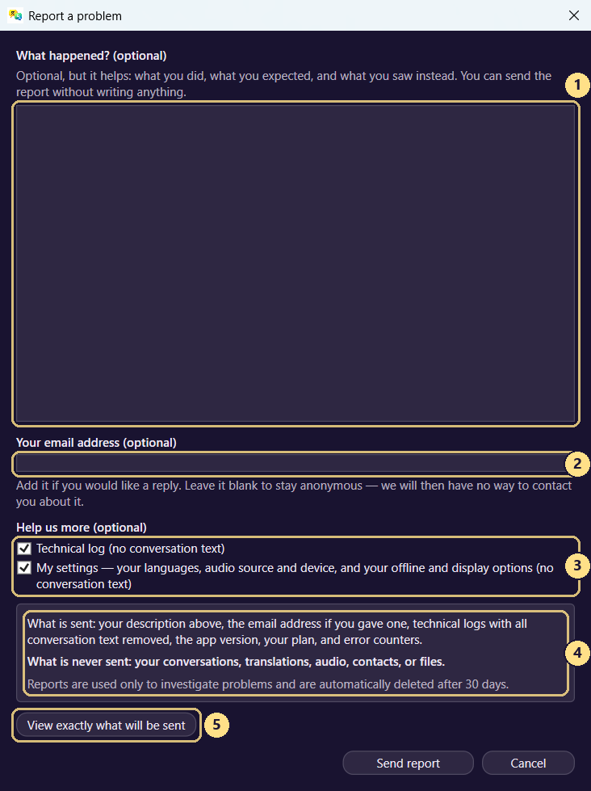
- 1Was ist passiert (optional)
- 2Ihre E-Mail-Adresse (optional)
- 3Was mitgesendet werden soll
- 4Was gesendet wird und was niemals gesendet wird
- 5Prüfen Sie zuerst den Inhalt
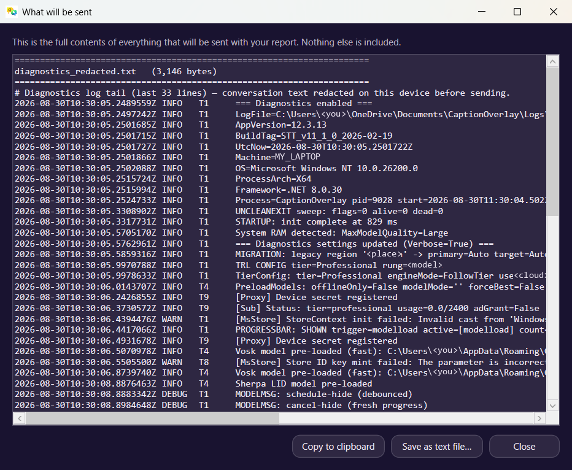
Wenn sich DuoVox unerwartet schließt
Wenn DuoVox nicht mehr reagiert oder sich von selbst schließt, merkt es sich, was passiert ist. Beim nächsten Start bietet es an, dies als Bericht zu senden – die Fehlerdetails sind bereits für Sie angehängt, Sie können also einfach auf Bericht senden drücken, oder auf Abbrechen, wenn Sie das lieber nicht möchten. Es wird nichts gesendet, solange Sie es nicht selbst senden, und Sie werden pro Vorfall nur einmal gefragt.
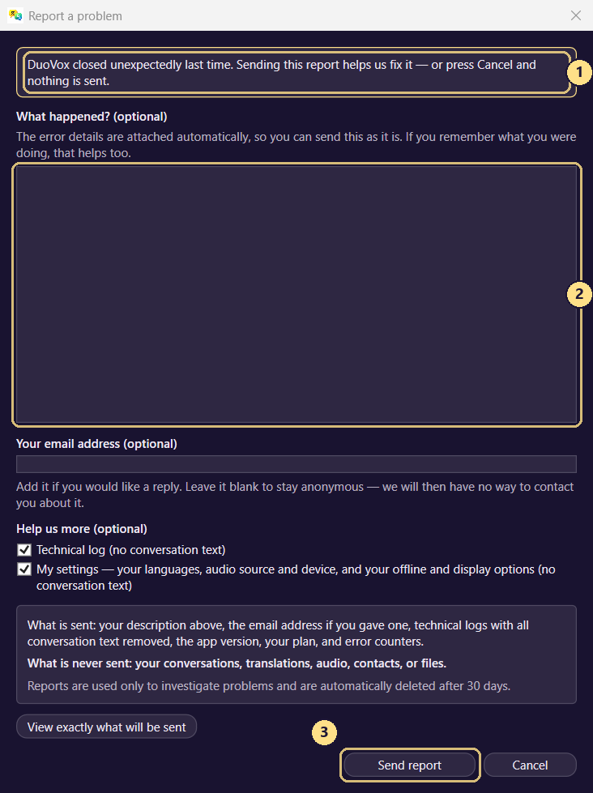
- 1Warum Ihnen das angezeigt wird
- 2Ergänzen Sie alles, woran Sie sich erinnern (optional)
- 3Senden oder Abbrechen drücken
Einen Vorschlag senden
Einen Vorschlag senden ist für eine Idee oder eine gewünschte Funktion gedacht, nicht für etwas, das schiefläuft. Gesendet wird, was Sie schreiben, Ihre E-Mail-Adresse, falls Sie eine angeben, sowie die App-Version und Ihr Tarif – keine Protokolle, keine Diagnosedaten und nichts aus Ihren Gesprächen.
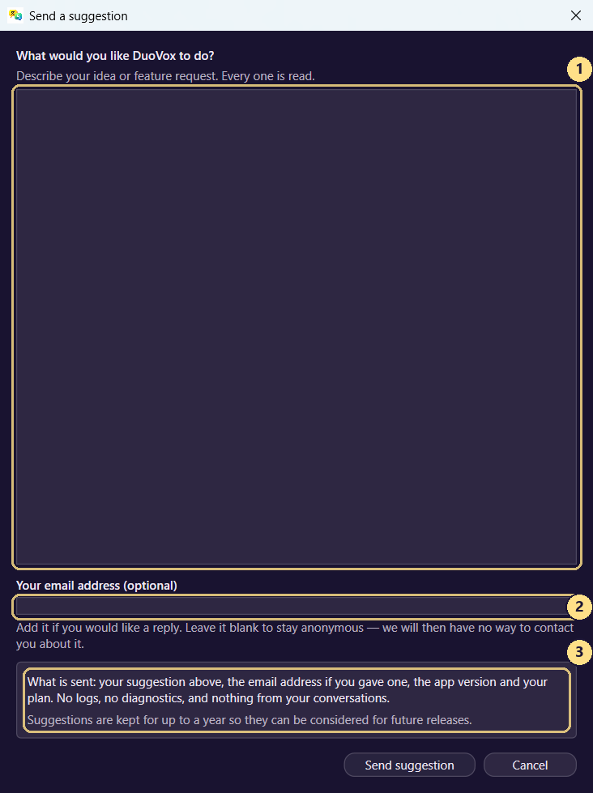
- 1Ihre Idee
- 2Ihre E-Mail-Adresse (optional)
- 3Was gesendet wird und wie lange es aufbewahrt wird
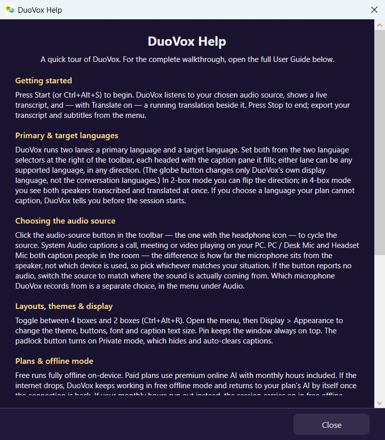
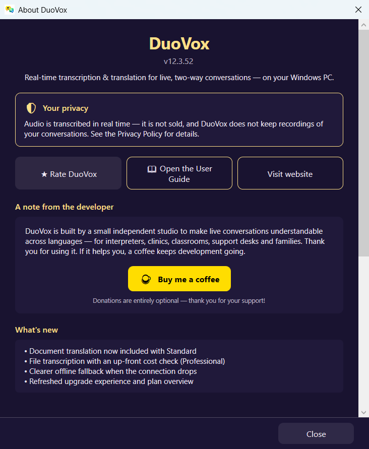
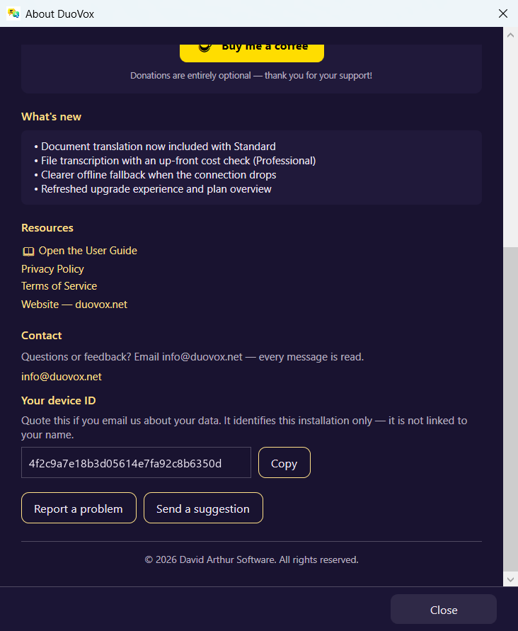
Fragen oder Feedback sind jederzeit willkommen: Schreiben Sie an info@duovox.net, jede Nachricht wird gelesen. Auf duovox.net finden Sie außerdem aktuelle Neuigkeiten, die Datenschutzrichtlinie und die Nutzungsbedingungen.
Wenn DuoVox Ihnen hilft, hält ein optionales “Spendiere mir einen Kaffee” ein kleines unabhängiges Studio am Laufen. Danke, dass Sie DuoVox verwenden.